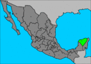

De: La Frikipedia, la enciclopedia extremadamente seria.
De: La Frikipedia, la enciclopedia extremadamente seria. De: La Frikipedia, la enciclopedia extremadamente seria.
| De la serie Países del planeta tierra: | |||||
| Yucatán | |||||
|---|---|---|---|---|---|
| |||||
| Lema: coox pa lo monte | |||||
| Himno: Conex Conex palexen xictubin xictubin yokolkin [Archivos canal 13]
| |||||
| 
| |||||
| [[Mérida|Capital]] | Mérida | ||||
| Mayor ciudad | Mérida | ||||
| Lenguas oficiales | Español, chaka, fresa, chilango(nos inaveden) y maya | ||||
| Gobierno | Güan-Ken-Pon, Disparejo y la ley del "shot" | ||||
| La Madrota | Ivonne Ortega | ||||
| Área | Sur-Este de México, mas cerca de florida que de cualquier parte | ||||
| Población | 1.5 millones de yucatercos, 5,000 arabes, turcos y demás narizones tacaños, 200 mil huaches (99.9 % chilangos jodidos que no buscan trabajo y no tienen mas que hacer como mojados y pues ya que los chingan al norte no les queda mas que venir a joder a l sur) y 200 mil variaditos | ||||
| Moneda | se aceptan mordidas en: pesos, cahuamas,pomos y cuerpomatico. | ||||
| Zona horaria | GTM +6 utilizamos la hora central almenos eso dice google | ||||
| Dominio Internet | inexistente | ||||
| Código telefónico | 52(999)
| ||||
| Somos el intelecto del país, por eso lo de cabezones | |||||
La tierra del faisán, el venado, el papadzul, los falos gigantes de piedra, de Viruta y Capulina, los codzitos y del PIYUPE(segun la R.A.E. piyupe es la abrebiatura de "PInche YUcateco PEndejo" termino adoptado tras la gran y masiva oleada de migrantes del centro del país a este estado, usado principalmente por aquellos llamados "pipopes" -PInches POblanos PEndejos- y chilangos).
Un vez habitada por los mayas ( hasta la fecha nadie sabe quien invadió primero el sur mexicano), varias hipotesis sugieren sobre su origen, pero éstas son las 3 más aceptadas : 1) Que se trasladaron desde Guatemala... sí, coño; 2. Que se trasladaron desde Belize o 3. que se trasladaron dese el centro de la atlantida según libros de texto. Esta rica tierra esta falta de cuerpos de agua a nivel terrestre pero llenos de huecos conectados entre ellos con agua ducle llamado cenotes o como se le conoce en maya como : "hollo con agua mucha, pa aventar mujer o suegra".
Las principales ciudades además de la capital son:
Valladolid - La segunda ciudad más importante de Yucatán. La mayoría de los yucatecos piensa que es un pueblo subdesarrollado.
Tizimín - feria ganadera, fresas-wannabe, muchos ranchos en sus alrededores.
Progreso: playa vacacional cercana, aguas turbias pero no tanto como en campeche, vive de la pesca, el turismo y la estadía de los meridanos en verano. Su fauna se carateriza por una grán variedad de los llamados "nacos" durante la mayor parte del año. Éstos seres peculiares habitan principalmente cerca de la orilla del mar, sin importar las inclemencias del tiempo; es común escuchar a estas creaturas relinchando un sonido como "Braiam! b'emte para acá, no ves que te está hablamdo la Betzabé?!", "Kevim, te vo'a meter un chimgadazo" o en la precencia de una mujer "Quisiera ser plomero, para destaparte el agujeroooo", entre otro tipo de llamados animales. Durante el invierno los "nacos" migran al pueblo o ciudad más cercana y un sinnúmero de europeos y sobre todo canadienses llegan a estos lugares, repitiendo esta migración año tras año.
Umán - Un pueblo ubicado lejos del mar, pero algunos lo consideran un puerto esta lleno de "marisco" y (o) "Cangrejos"
Colonias Destacadas:
Campestre: Ruinas del antiguo imperio fresa y nuevo hogar de la familia del Chapo Guzmán
Montecristo: Nuevo imperio fresa donde se ubican las prostitutas de lujo más famosas del Estado, tales como la suegra del chupachabras
Altabrisa: Colonia saturada de negocios, plazas y retenes.
col. México: punto de referencia, leyendas de gloria antigua, apenas creibles.
Cholul: conocida como la playa de cholul por la fauna conformada mayormente de cangrejos, anteriormente comunidad rural devorada por la ciudad de Mérida (we own u)
Centro: peatones suicidas, tráfico insoportable, contaminación auditiva y visual en toda su extensión... se gana mucho Vease el chaya.
Pensiones: variedad de clases sociales, zona ligeramente muy insegura , se cree que los maras y demas pandillas rondan la zona, cuenta con millones de etapas.
Francisco de montejo: El pequenño DF en Mérida. zona prácticamente vomitada de chilangos estafadores, huaches, pipopes y demas mojado que no la logro en el norte.
Meliton salazar, Juan pablo II, Mulsay, y cercanias incluida la colonia morelos : Colonias caracterizadas por ser cede de una señora llamada "la chingada"(zonas pertenecientes al pueblo muerto yucatan amplia poblacion constituida por sureños, Boom, 3C,RC,maras, Neibors y la banda cacique dueña por el momento los Briseños)
Chuburná: Antes pueblo, hoy mega-pueblo. Fácil perderse por sus calles mal hechas.
Las Américas: Familias de varias clases sociales, casas de Infonavit y Fovisste con un acceso complicado y malo.
Ahora con lo que respecta a la vida cotidiana
Actualizacion jueves 4 de septiembre 2008.
Los yucatecos son gobernados por aquella que se hace llamar "La gober preciosa" lenguas gracias a un acuerdo con nuestro presidente para que su partido ayude con ciertas reformas...
Se dice que obtuvo la mayoría de votos gracias a la promesa de la construcción de un tren bala en el estado, el cual sigue siendo esperado por los yucatecos.
Tras la aparente "dictador Yucateco Victor Cervera Pacheco; los restos embalsamados de nuestro gran Amo han sido profanamente Restaurados por el mismisimo Satanas quien mediante brujerismo, santeria, practicas profanas y hereticas (como es de esperarse de Chabelo digo Satanas) los unira via aguja e hilo creado con cabellos de charles Manson. Una ves completado el cuerpo sera enviado por Fed-EX a Alemania occidental(su tierra Natal y hogar durante el olocausto judio o como lo llamaba la gran quema de impuros) donde fundiran los restos de Adolf Hitler(su padre) con un aleacion de Mithril, Platino, Diamante y Dragon Force(strongest metal ever) para crear de esta manera un poderozo exoesqueleto T1000 con el cual lograra la inmortalidad (fisica pues su espiritu diambula en el palacio municipal y en el corazon de todos los yucatecos).
Una ves completado el nuevo cuerpo del amo se sacrificaran 1200 miss universos Virgenes con la dominical ofrenda de corazones la cual consiste en una orgia de sangre (normalmente auspiciada por el congreso del estado y patrocianada por botanas la lupita) acto seguido Carlos santana el 666avo jinete del apocalipsis procedera a tocar la sonata del diablo version electrica en guitarra en un concierto en el Carlos Iturralde una ves completado el himno se procedera a invocar el alma del Kaiser cortando 12 cabezas de narcomenudistas por el sacerdote coulom quien las depositara por casa de mau (chiste Local).
Una ves terminado estos pasos el espiritu del Precioso sera disparado al cuerpo y Victor 2.0 vendra a nuestro mundo donde sera vestido con la tunica de Barbanegra, empuñara la espada que Leonidas uso para guiar a los espartanos y Vestira la corona de espinos que le arranco al mismisimo Jesucristo en el mismo infierno mientras se burlaba de Maoma, Pateaba el gigantesco culo de buda y asia que dios padre le hiciera los mandados convirtiendolo asi en el original cyborg, zombie, pirata y Ninja(ja no sabian que es ninja como podrian saberlo si es ninja) y asi de esta manera retomar el poder masivo que el PRI a ejercido y ejercera siempre
Adorado por muchos odiado por menos pues cual kaiser mandaba a los impuros a la Muerte por empalamiento Fatal. Esperamos tu regreso pronto oh! dulce dulce principe; señor de la ponzoña, odio, terror y destruccion. Queremos tu Reyno para que los impuros sean quemados en la GRAN pira de Plaza Grande que alimentabas con las almas y cuerpos de impuros chilangos y demas fuereños que no dignos de la grandeza del estado osan venir a meter la tranza que tanto odiabas. y asi dicho esto pronto te veremos llegar para que todo sea grande como era en los buenos tiempos.
Hoy en dia como lo fue hace mucho tiempo es normal ver mestizas en la calle. Las zonas más movidas de la ciudad son la calle 60 y el venadito debido a la abundancia de bellas prostitutas en cada esquina.
En Yucatán la prostitucion es legal, siempre y cuando la autoridad no se entere. La 60 y el venadito se encuentran cerca, muy cerca de los aluxes y no esta de más decir que no necesitas ser mayor de edad para que te vendan cigarros o alcohol.
La principal exportación de yucatan son las hamacas,huayas,palanquetas,nancen,queso de bola y alguna que otra mestisa que se pierde en gran plaza y la exportan como mano de obra (no es raro para ellas este tipo de señora cuando se da cuenta lo incubre con un "a es que me fui disneyworld en un grupo de escurcion"
Autor(es):